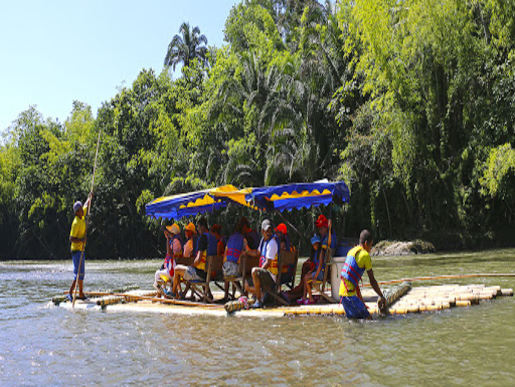

<div class="col-md-8" align ="justify">     
    

    

<p>
 Vive una aventura al límite de la emoción, en la cual disfrutaras de un recorrido de 3 horas y media por un entorno natural, acompañado de las más exuberantes flora y fauna de nuestra Colombia. Disfrutarás los momentos más inolvidables con familiares, amigos y conocidos degustando al aire libre un delicioso fiambre.
<br>
Servicios<br>
En Balsaje Sol Naciente encontraras un recorrido en balsa por el río La Vieja, disfrutando de un entorno natural y de la aventura que este ofrece, te brindamos:
<br>
El transporte desde Quimbaya hasta Puerto Alejandria, regreso desde Piedras de Moler hasta Quimbaya,
un suculento almuerzo llamado pollo al paseo,
tu seguro de accidentes,
el chaleco homologado
y los dos bogas (conductores de la balsa).
<br>Durante el recorrido podrás saborear un buen café en compañía de tu gente a bordo de la balsa, terminando el recorrido en piedras de moler (Valle del Cauca), allí nuevamente les recogemos para llevarlos de retorno a Quimbaya.
<br>
Ubicación<br>
Oficina: Carrera 6 # 17-02 - Quimbaya, Quindío.
<br>
Sitio de Partida del Balsaje: Puerto Alejandría.
</p> 
</div> 
